第12章 算法专题(排序算法、哈夫曼树)
排序算法
排序算法分类
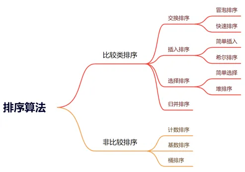
教材将排序算法分为 比较类排序 与 非比较排序。
比较类排序：
- 交换排序
- 冒泡排序
- 快速排序
- 插入排序
- 简单插入
- 希尔排序
- 选择排序
- 简单选择
- 堆排序
- 归并排序
非比较排序：
- 计数排序
- 基数排序
- 桶排序
稳定性
如果待排序元素中 A = B，且排序后 A、B 的相对位置不会发生变化，则判定排序算法是 稳定的；反之则是 不稳定的。
内部排序
内部排序是指待排序记录存放在计算机自身的存储器中进行排序的过程。
外部排序
外部排序是指由于待排序记录数量很大，以致于内存无法一次全部容纳所有记录，在排序过程中需要从外存中访问记录的排序过程。
常见排序算法复杂度与稳定性
| 类别 | 排序方法 | 平均时间复杂度 | 最好情况 | 最坏情况 | 辅助空间复杂度 | 稳定性 |
|---|---|---|---|---|---|---|
| 插入排序 | 直接插入 | O(n^2) | O(n) | O(n^2) | O(1) | 稳定 |
| 插入排序 | 希尔排序 | O(n^1.3) | O(n) | O(n^2) | O(1) | 不稳定 |
| 选择排序 | 直接选择 | O(n^2) | O(n^2) | O(n^2) | O(1) | 不稳定 |
| 选择排序 | 堆排序 | O(n log n) | O(n log n) | O(n log n) | O(1) | 不稳定 |
| 交换排序 | 冒泡排序 | O(n^2) | O(n) | O(n^2) | O(1) | 稳定 |
| 交换排序 | 快速排序 | O(n log n) | O(n log n) | O(n^2) | O(1) | 不稳定 |
| 桶排序 | 计数排序 | O(n+k) | O(n+k) | O(n+k) | O(k) | 稳定 |
| 桶排序 | 基数排序 | O(d(r+n)) | O(d(r+n)) | O(d(r+n)) | O(r+n) | 稳定 |
| 其它排序 | 归并排序 | O(n log n) | O(n log n) | O(n log n) | O(n) | 稳定 |
| 其它排序 | 二叉树排序 | O(n log n) | O(n log n) | O(n^2) | O(n) | 稳定 |
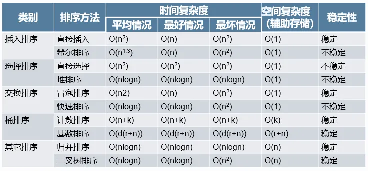
基数排序
基数排序是一种整数排序算法，相当于 多趟计数排序，适合位数有限的整数排序。
教材给出：
- 时间复杂度：
O(d(n + r)) - 辅助空间复杂度：
O(n + r) d是数字位数n是数字个数r是基数- 稳定排序
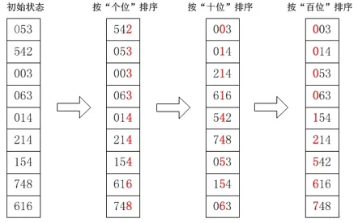
教材示意为依次按照：
- 个位
- 十位
- 百位
进行排序。
参考代码：
void radix_sort(int d, int r){
int radix = 1;
for(int i = 1; i <= d; i++){
for(int j = 0; j < r; j++) s[j] = 0;
for(int j = 0; j < n; j++) s[a[j] / radix % r]++;
for(int j = 1; j < r; j++) s[j] += s[j - 1];
for(int j = n; j >= 0; j--) res[--s[a[j]] / radix % r] = a[j];
for(int j = 0; j < n; j++) a[j] = res[j];
radix *= r;
}
}
以上代码按教材页面原样整理。本文不对教材代码进行额外修正。
希尔排序
希尔排序实质上是一种 分组插入方法。
它通过比较相距一定间隔的元素来进行，各趟比较所用的距离随着算法进行而减小，直到只比较相邻元素的最后一趟排序为止。
教材给出：
- 时间复杂度：
O(n^1.3) - 辅助空间复杂度：
O(1) - 不稳定排序
参考代码：
void shell_sort(){
for(int d = n / 3; d; d = (d == 2 ? 1 : d / 3)){
for(int st = 0; st < d; st++){
for(int i = st + d; i < n; i += d){
int t = a[i], j = i;
while(j > st && a[j - d] > t){
a[j] = a[j - d];
j -= d;
}
a[j] = t;
}
}
}
}
二叉树排序
教材描述：
左子树上所有结点的值都小于根结点的值，右子树上所有结点的值都大于根结点的值；对二叉排序树做中序遍历，即为有序序列。
教材给出：
- 时间复杂度：
O(n log n) - 辅助空间复杂度：
O(n) - 稳定排序
堆排序
堆是一棵 顺序存储的完全二叉树。
其中每个结点的关键字都不小于其孩子结点的关键字，这样的堆称为 大根堆。
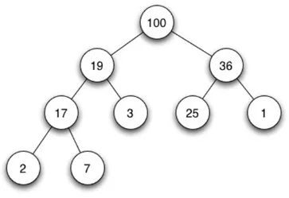
排序过程：
- 将堆顶元素与末尾元素交换；
- 将最大元素“沉”到数组末端；
- 反复执行此过程；
- 直到序列有序。
教材给出：
- 时间复杂度：
O(n log n) - 辅助空间复杂度：
O(1) - 不稳定排序
拓扑排序
拓扑排序是一个 有向无环图（DAG，Directed Acyclic Graph）的所有顶点的线性序列。
需要满足：
- 每个顶点出现且只出现一次；
- 若存在一条从顶点
A到顶点B的路径，那么在序列中顶点A出现在顶点B的前面。
拓扑排序 不一定唯一。
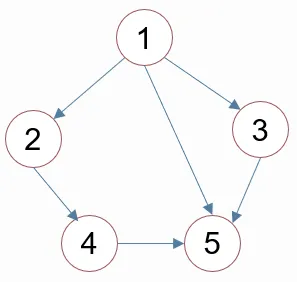
教材给出的两个合法序列示例：
1 2 3 4 5
1 3 2 4 5
哈夫曼编码
哈夫曼编码（Huffman Coding）是一种可变长编码方式，该方法完全依据字符出现概率来构造异字头的平均长度最短的码字，比起定长编码的 ASCII 编码来说，哈夫曼编码能节省很多的空间，因为每一个字符出现的频率不是一致的；它也是一种用于无损数据压缩的熵编码算法，通常用于压缩重复率比较高的字符数据。 什么是哈夫曼树？
什么是哈夫曼树？
给定 N 个权值作为 N 个叶子结点，构造一棵二叉树，若该树的带权路径长度达到最小，称这样的二叉树为最优二叉树，也称为哈夫曼树(Huffman Tree)。哈夫曼树是带权路径长度最短的树，权值较大的结点离根较近。
- 最优二叉树
- 哈夫曼树（Huffman Tree）
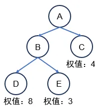
哈夫曼树是带权路径长度最短的树，权值较大的结点离根较近。
结点路径
将树中一个结点到另一个结点所经历的分支称为 结点路径。
例如：
A → B → E
路径长度
路径上的分支总数称为 路径长度。
例如：
A → B → E
路径长度为：
2
结点的带权路径长度
教材定义：
结点的带权路径长度
= 从根结点到某结点的路径长度 × 结点权值
例如，某结点：
- 路径长度为
2 - 权值为
8
则：
2 × 8 = 16
树的带权路径长度 WPL
将树中所有叶子结点的带权路径长度相加，称为树的带权路径长度。
教材示例中，三个叶子结点 C、D、E：
- 路径长度分别为
1、2、2 - 权值分别为
4、8、3
所以：
WPL = 1 × 4 + 2 × 8 + 2 × 3 = 26
一般写为：
WPL = l1×w1 + l2×w2 + ... + ln×wn
其中：
l表示路径长度w表示权值n表示叶子结点个数
哈夫曼编码算法步骤
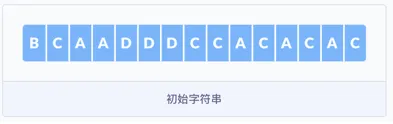
教材使用字符串：
BCAADDDCCACACAC
作为示例。
各字符出现频率为：
| 字符 | 频率 |
|---|---|
| B | 1 |
| C | 6 |
| A | 5 |
| D | 3 |
第一步：统计字符频率
先计算字符串中每个字符出现的频率。
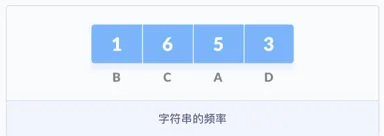
第二步：按频率排序
按照字符出现频率进行排序，组成队列 Q：
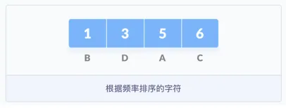
B(1), D(3), A(5), C(6)
低频在前，高频在后。
第三步：构建哈夫曼树
把这些字符作为叶子结点开始构建一颗哈夫曼树。 （1）首先创建一个空结点 z，将最小频率的字符分配给 z 的左侧，并将频率排在第二位的分配给 z 的右侧，然后将 z 赋值为两个字符频率的和；然后从队列 Q 中删除 B 和 D，并将它们的和添加到队列中，上图中 * 表示的位置。
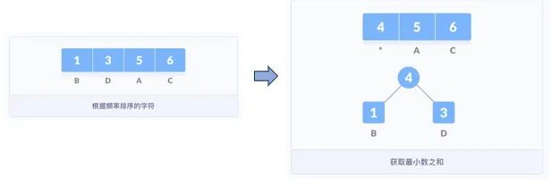
将字符作为叶子结点开始构建哈夫曼树。 （2）紧接着，重新创建一个空的结点 z，并将 4 作为左侧的结点，频率为 5 的 A 作为右侧的结点，4 与 5 的和作为父结点，并把这个和按序加入到队列中，再根据频率从小到大构建树结构（小的在左）。
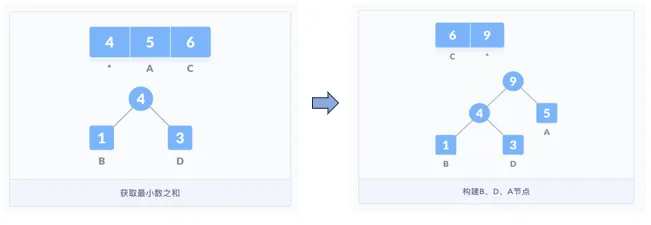
- 取频率最小的两个结点；
- 创建父结点，其权值为两个子结点权值之和；
- 将新父结点重新加入队列；
- 按频率继续合并；
- 直到所有字符都出现在树中。
继续按照之前的思路构建树，直到所有的字符都出现在树的结点中，哈弗曼树构建完成。结点的带权路径长度为从根结点到该结点的路径长度与结点权值的乘积。该二叉树的带权路径长度
WPL = 6×1 + 5×2 + 3×3 + 1×3 = 28
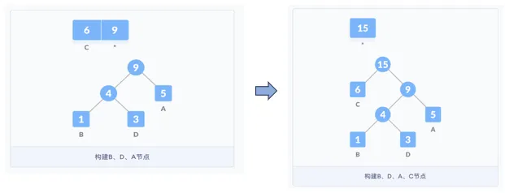
第四步：对字符编码
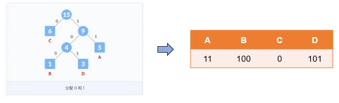
教材规定：
- 左侧连接线分配
0 - 右侧连接线分配
1
从根结点到字符叶子结点路径上的 0/1 序列，就是该字符的编码。
教材给出的编码：
| 字符 | 编码 |
|---|---|
| A | 11 |
| B | 100 |
| C | 0 |
| D | 101 |
未编码前，字符串二进制长度为：
120 Bit
编码之后：
1000111110110110100110110110
只占：
28 Bit
教材总结：
哈夫曼编码本质上是将最宝贵的资源——最短的编码——分配给出现概率最多的数据，是一种贪心思想。
哈夫曼编码特点
教材给出两个特点：
- 带权路径长度
WPL最短且唯一； - 编码互不为前缀，即一个编码不是另一个编码的开头。
同时教材强调：
哈夫曼树和编码都不唯一，只有树的 WPL（带权路径长度）是唯一的。
为什么没有前缀问题？
因为哈夫曼树中，每个字母对应的结点都是叶子结点。
每个字符的编码由根结点到叶子结点的路径决定，因此一个叶子结点路径不可能成为另一个叶子结点路径的前缀。
为什么哈夫曼编码较短？
因为哈夫曼树是带权路径长度最短的树。
权值较大的结点距离根结点较近，而最终的哈夫曼编码总长度与带权路径长度成正比。
随堂检测
1. 最少交换次数
将数组：
{8，23，4，16，77，-5，53，100}
中的元素从大到小排序，每次可以交换任意两个元素，最少要交换（ ）次。
- A. 4
- B. 5
- C. 6
- D. 7
查看答案
答案：B
2. 平均时间复杂度
（ ）的平均时间复杂度为 O(n log n)，其中 n 是待排序的元素个数。
- A. 快速排序
- B. 插入排序
- C. 冒泡排序
- D. 基数排序
查看答案
答案：A
3. 已有序情况下的排序
在待排序的数据表已经为有序时，下列排序算法中花费时间反而多的是（ ）。
- A. 堆排序
- B. 桶排序
- C. 冒泡排序
- D. 快速排序
查看答案
答案：D
4. 非比较排序
在下列各种排序算法中，不是以“比较”作为主要操作的算法是（ ）。
- A. 选择排序
- B. 冒泡排序
- C. 插入排序
- D. 基数排序
查看答案
答案：D
5. 递归调用使用的数据结构
递归过程或函数调用时，处理参数和返回地址，通常使用一种称为（ ）的数据结构。
- A. 队列
- B. 多维数组
- C. 线性表
- D. 栈
查看答案
答案：D
6. 比较次数与初始排列无关
在所有排序方法中，关键字比较的次数与记录的初始排列次序无关的是（ ）。
- A. 希尔排序
- B. 冒泡排序
- C. 插入排序
- D. 选择排序
查看答案
答案：D
7. 不稳定排序
排序算法稳定的含义是：关键码相同的记录排序前后相对位置不发生改变。
下列哪种排序算法是不稳定的（ ）。
- A. 冒泡排序
- B. 插入排序
- C. 归并排序
- D. 快速排序
查看答案
答案：D
8. 体育课站队
体育课铃声响了，同学们陆续奔向操场，按老师要求从高到矮站成一排。
每个同学按顺序来到操场时，都从排尾走向排头，找到第一个比自己高的同学，并站在他的后面。
这种站队的方法类似于（ ）算法。
- A. 快速排序
- B. 插入排序
- C. 冒泡排序
- D. 归并排序
查看答案
答案：B
9. 冒泡排序与逆序对
使用冒泡排序对序列进行升序排列，每执行一次交换操作会减少 1 个逆序对。
序列：
5, 4, 3, 2, 1
需要执行（ ）次操作，才能完成冒泡排序。
- A. 0
- B. 5
- C. 10
- D. 15
查看答案
答案：C
10. 稳定排序
下列排序算法稳定的是（ ）。
- A. 选择排序
- B. 冒泡排序
- C. 快速排序
- D. 希尔排序
查看答案
答案：B
11. 逆序对个数
对于给定序列：
{a1, a2, ..., ai, ..., aj, ..., ak}
教材定义：当且仅当：
i < j
且
ai > aj
时，称 (i, j) 为逆序对。
序列：
{1, 7, 2, 3, 5, 4}
的逆序对数为（ ）个。
- A. 4
- B. 5
- C. 6
- D. 7
查看答案
答案：B
12. 删除元素减少逆序对
对于给定序列：
{7, 5, 1, 9, 3, 6, 8, 4}
在不改变顺序的情况下，去掉（ ）会使逆序对的个数减少 3。
- A. 7
- B. 5
- C. 3
- D. 8
查看答案
答案：C
13. 比较排序复杂度下限
基于比较的排序时间复杂度的下限是（ ），其中 n 表示待排序的元素个数。
- A.
O(n) - B.
O(n log n) - C.
O(log n) - D.
O(n^2)
查看答案
答案：B
14. 递归算法
考虑如下递归算法：
int solve(n)
if n <= 1 return 1
else if n >= 5 return n * solve(n - 2)
else return n * solve(n - 1)
调用：
solve(7)
得到的返回结果为（ ）。
- A. 105
- B. 840
- C. 210
- D. 420
查看答案
答案：C
15. 递归层数过多
在程序运行过程中，如果递归调用的层数过多，可能会由于（ ）引发错误。
- A. 系统分配的栈空间溢出
- B. 系统分配的队列空间溢出
- C. 系统分配的链表空间溢出
- D. 系统分配的堆空间溢出
查看答案
答案：A
16. 哈夫曼编码长度
现有一段文言文，要通过二进制哈夫曼编码进行压缩。
假设这段文言文只由 4 个汉字：
“之”、“乎”、“者”、“也”
组成，它们出现的次数分别为：
700、600、300、200
那么“也”字的编码长度是（ ）。
- A. 1
- B. 2
- C. 3
- D. 4
查看答案
答案：C
17. 哈夫曼编码的策略
在数据压缩编码中的哈夫曼编码方法，在本质上是一种（ ）的策略。
- A. 枚举
- B. 贪心
- C. 递归
- D. 动态规划
查看答案
答案：B
18. 分治
（ ）就是把一个复杂的问题分成两个或者更多的相同或相似的子问题，再把子问题分成更小的子问题，……，直到最后的子问题可以简单地直接求解，而原问题的解就是子问题解的并。
- A. 动态规划
- B. 贪心
- C. 分治
- D. 搜索
查看答案
答案：C
19. 折半搜索
设有 100 个数据元素，采用折半搜索时，最大的比较次数为（ ）。
- A. 6
- B. 7
- C. 8
- D. 10
查看答案
答案：B
20. 快速排序最坏时间复杂度
快速排序最坏情况下的算法时间复杂度为（ ）。
- A.
O(log n) - B.
O(n) - C.
O(n log n) - D.
O(n^2)
查看答案
答案：D